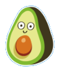

Marketing y eventos
Campañas de marca, colaboraciones y próximos eventos relevantes para el sector de alimentación infantil.
Campañas destacadas
Marketing y eventos
NAN conecta la ciencia y la experiencia de las familias en su campaña
Tipo de acción: campaña de marca y comunicación dirigida a familias.NAN, Portugal
Septiembre de 2026
Próximos eventos
Marketing y eventos
1. ExpoNadó Sabadell
Tipo: feria para consumidores.Sabadell, España
7–8 de noviembre de 2026
Marketing y eventos
2. Encuentro sectorial ASEPRI
Tipo: encuentro profesional.España
5 de noviembre de 2026

Criterio editorial
Mi bebé y yo queda excluido del calendario al estar cancelado. Los eventos se incluyen como oportunidades potenciales de seguimiento sectorial, no como acciones confirmadas de las marcas competidoras. Las fechas, los organizadores y los expositores deben revisarse antes de publicar la landing.